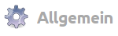
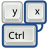

CCSM Allgemein
Dieser Artikel wurde für die folgenden Ubuntu-Versionen getestet:
Ubuntu 16.04 Xenial Xerus
Artikel für fortgeschrittene Anwender
Dieser Artikel erfordert mehr Erfahrung im Umgang mit Linux und ist daher nur für fortgeschrittene Benutzer gedacht.
Der CompizConfig Einstellungs-Manager (abgeleitet aus der Paketbezeichnung nachfolgend mit "CCSM" abgekürzt) bietet umfangreiche Möglichkeiten, das Verhalten auf dem Bildschirm, das Aussehen diverser Komponenten sowie die Eingriffe durch die Tastatur und die Maus einzustellen.
Dieser Abschnitt behandelt die unter dem Thema "Allgemein" im Startbildschirm vom CCSM zusammengefassten Einstellungen. Dabei ist der Punkt / sind die Funktionen unter "Allgemeine Optionen" im Gegensatz zu allen anderen Punkten nicht abwählbar, es kann kein Häkchen gesetzt bzw. entfernt werden.
Einstellungen Allgemein¶
Nachfolgend ist eine Übersicht aller Beschreibungen aufgeführt, die sich mit dem Thema "Allgemein" befassen. Durch Anklicken des jeweiligen Icons bzw. des Titels gelangt man zur jeweiligen Detailbeschreibung.
|  | |||||
| Allgemeine Optionen |  | Commands | Composite | ||
| Copy to texture | Gnome Kompabilität | KDE Kombabilität | |||
| KDE/Qt Event Loop | OpenGL | ||||
Beschreibungen unter Allgemein¶
Ab Natty Narwhal wurden einige Funktionen in andere Optionen ausgelagert und auch neue Optionen eingefügt. Dieses wurde wegen der Doppelfunktion zwischen Ubuntu (Ubuntu-Classic) auf der einen Seite und Unity auf der anderen erforderlich.
Die Symbole in den Erläuterungen haben folgende Bedeutung:
Für Natty Narwhal gilt
= verweist auf eine Verlagerung der Beschreibung
 = verweist auf eine zusätzliche Option
= verweist auf eine zusätzliche Option
unter "Typ"
 = Auswahl/Wechsel erfolgt durch Anklicken
= Auswahl/Wechsel erfolgt durch Anklicken = Einstellung der Tasten erfolgt in einer Auswahlbox
= Einstellung der Tasten erfolgt in einer Auswahlbox = Auswahl wird in einem "DropDown" vorgegeben
= Auswahl wird in einem "DropDown" vorgegeben = Einstellung erfolgt über einen "Schieber"
= Einstellung erfolgt über einen "Schieber" = steht für die Eingabe eines zulässigen Textes
= steht für die Eingabe eines zulässigen Textes
Hervorgehobene Werte bei den Einstellungen verweisen auf die bei der Installation vorgegebene Standardeinstellung.
Allgemeine Optionen¶
Hier lassen sich umfangreiche Einstellungen rund um Compiz vornehmen. Letztendlich kann hier die Grundkonfigurationen vom Fenstermanager Compiz und die Integration in das Basissystem eingestellt bzw. geändert werden.
Allg. Allgemein¶
| Funktion | Typ | Beschreibung |
| "Akustische Glocke" | | Es wird der systemeigene Warnton aktiviert |
| "Bei maximierter Anzeige Tipps ignorieren" | | Bei maximierter Anzeige eines Fensters Größensteigerung und Aspekttipps ignorieren |
| "Programmleistenfenster ausblenden" | | Fenster ausblenden, die sich bei Wechsel in Modus "Desktop anzeigen" nicht in der Programmleiste befanden |
| "Verzögerung der Rand-Aktion" | | Dauer, die der Mauszeiger am Bildschirmrand verweilen muss, bevor eine Aktion am Rand ausgeführt wird |
| "Pingverzögerung" | | Intervall zwischen Pingmeldungen (Angabe in msek.) |
| "Umleitung von Vollbildfenstern aufheben" | | Aufbau von Vollbildfenstern ohne Umleitung zu "Offscreen-Pixmaps" erlauben |
| "Standardsymbol" | | Standardsymbol für Fenster festlegen |
| "Force independent output painting" | | Baue jedes Ausgabefenster unabhängig vollständig auf, selbst wenn sich Ausgaben überlappen |
| "Texturkompression" | | Benutze Kompression für aus Bildern generierter Textur, sofern möglich |
| "Save plugin states on unload" | | Sichere Zustand und Position der Plugins beim beim Herunterfahren, damit diese mit vorherigem Zustand / Position wiederkehren. |
Allg. Display Settings¶
| Funktion | Typ | Beschreibung |
| "Akustische Glocke" | | Es wird der systemeigene Warnton aktiviert |
| "Strukturfilter" | | Einstellung der Funktion Texturfilter sind "Schnell", "Gut", "Beste" |
| "Beleuchtung" | | Beim Umwandeln des Bildschirms diffuses Licht verwenden |
| "Aktualisierungsrate erkennen" | | Automatische Erkennung der Aktualisierungsrate |
| "Aktualisierungsrate" | | Bildwiederholungsrate manuell vorgeben (in Hertz) |
| "Ausgaben erkennen" | | Automatische Erkennung von Ausgabegeräten |
| "Behandlung von überlappenden Ausgabegeräten" | | Legt fest, welches der überlappenden Ausgabegeräte nach welchen Kriterien bevorzugt werden soll. Einstellungen: "Intelligent", "Größeres" oder "Kleineres" Ausgabegerät bevorzugen |
| "Ausgaben" | | Liste mit Zeichenkette zur Erläuterung von Ausgabegeräten. Die Schaltflächen "Neu", "Löschen", "Bearbeiten", "Hoch" und "Runter" werden zur Bearbeitung dieser Liste eingesetzt |
| "Mit VBlank synchronisieren" | | Bildschirmaktualisierung nur während inaktiver vertikaler Anzeige durchführen |
Allg. Focus & Raise Behaviour¶
Die Bezeichnung "Focus" bezeichnet den aktiven Zustand eines Fensters bzw. einer Anwendung. Mit "Raise Behaviour" wird der Übergang in einen aktiven Zustand beschrieben.
| Funktion | Typ | Beschreibung |
| "Fokuswechsel durch Klicken" | | Es wird der Fokus für ein Fenster durch Anklicken desselben erreicht |
| "Durch Klicken in den Vordergrund" | | Es wird das Fenster durch Anklicken auch in den Vordergrund gehoben (oberstes Fenster) |
| "Automatisch in den Vordergrund" | | Es wird das ausgewählte Fenster automatisch erst mit Zeitverzögerung in den Vordergrund gehoben |
| "Verzögerungszeit einstellen" | | Es kann eine Zeit mit einem Regler oder durch direkte Eingabe vorgegeben werden (Einstellbreich von 0 bis 10 Sekunden, Anzeige in msek) |
| "Stärke der "Focus Stealing-Prevention"" | | Es können im DropDown verschiedene Stärken zur Vorbeugung einer Übernahme durch den Fokus einer anderen Anwendung eingestellt werden. Einstellungen sind: "Aus", "Niedrig", "Normal", "Hoch", "Sehr hoch" |
| "Fenster mit "Focus Stealing Prevention"" | | Es können über eine Eingabemaske Fenster bestimmt werden, denen man den Fokus nicht nehmen darf. Standardeinstellung ist die "Legitimations-Eingabe" |
Allg. Maus- & Tastenkürzel¶
Unter diesem Reiter werden eine Vielzahl von Fensterfunktionen und deren Anbindungen an ein Tastaturkürzel bzw. eine Aktion mit einem Mausknopf eingestellt. Die Konfiguration erfolgt dabei (in der Regel) in einer Abfragebox.
Allg. Desktop-Größe¶
| Funktion | Typ | Beschreibung |
| "Virtuelle horizontale Größe" | | Hiermit kann man die Anzahl der Arbeitsflächen einstellen, die nebeneinander angeordnet werden sollen. Der Standardwert ist "4", unter Unity jedoch "2" |
| "Virtuelle vertikale Größe" | | Hiermit kann man die Anzahl der Arbeitsflächen einstellen, die übereinander angeordnet werden sollen. Der Standardwert ist "1", unter Unity jedoch "2" |
| "Anzahl der Desktops" | | Der Standardwert ist "1" ++ Nicht mehr in Xenial |
Hinweis:Sofern man die Optionen "Desktop-Würfel" bzw. "Würfel-Drehen" verwenden will, sollte man die Standardwerte setzen. | ||
Commands¶
wenn diese Option aktiviert wurde, lassen sich hinsichlich auszuführender Befehle / Aufruf von Skripten verschiedene Bedingungen konfigurieren. Wenn keine Befehle und Bedingungen gesetzt wurden, sollte man das Häckchen für diese Option insgesamt entfernen.
| Funktion | Typ | Beschreibung |
| "Befehle" | | Der Befehl, der bei Ausführung von "run_command#" im Terminal bzw. einer Shell ausgeführt wird. Es sind insgesamt 12 Zeilen zur Eingabe/Setzen der Befehlssyntax verwendbar, entsprechend ist das "#" mit einer Zahl von "0" bis "12" zu ersetzen, die Zahl "2" wird nicht verwendet. |
| "Zuordnung Tasten" | | Eine Tastenbelegung, die den durch den in der Zeile# (siehe Reiter "Befehl") definierten Befehl ausführen lässt. Es sind 12 Einstellungen in einer Auswahlbox möglich, die Zahl "2" wird nicht verwendet. |
| "Zuordnung Mausknöpfe" | | Eine Mausknopfbelegung, die den durch den in der Zeile# (siehe Reiter "Befehl") definierten Befehl ausführen lässt. Es sind 12 Einstellungen in einer Auswahlbox möglich, die Zahl "2" wird nicht verwendet. |
| "Zuordnung Mauszeiger" | | Es wird die Mauszeigerbewegung auf einen Bildschirmrand hin ausgewertet, die den durch den in der Zeile# (siehe Reiter "Befehl" definierten Befehl) ausführen lässt. Es sind nur 8 Einstellungen in einer Auswahlbox sinnvoll möglich, auch wenn 12 Eingabeoptionen angezeigt werden. |
Composite¶
Diese Option ist erst ab Natty Narwhal verfügbar. Hierher wurden vom Vorläufer CCSM Teile aus dem Thema "Allgemein" ausgelagert. Jetzt sind hier u.a. zu finden:
| Funktion | Typ | Beschreibung |
| "Langsame Animation" | | Aktivierung erfolgt über eine Auswahlbox zur Einstellung der Tastaturkürzel |
| "Aktualisierungsrate erkennen" | | Die Funktion zur automatischen Erkennung der Aktualisierungsrate zu- bzw. abschalten |
| "Aktualisierungsrate" | | Den Wert für die Einstellung der Bildwiederholung (Häufigkeit/Sekunde) setzen |
| "Umleitung von Vollbildfenstern aufheben" | | Den Aufbau von "Vollbildfenstern" ohne eine Umleitung in eine "Offscreen-Pixmaps" erlauben |
| "Force indepent output painting" | | Baue jedes Ausgabefenster unabhängig vollständig auf, selbst wenn sich Ausgaben überlappen |
Copy to texture¶
Diese Option ist erst ab Natty Narwhal verfügbar und hat keine Unterfunktionen. Es kann nur die Funktion "Copy pixmap content to Texture" insgesamt zu- bzw. abgeschaltet werden.
Gnome Kompabilität¶
Hiermit wird sichergestellt, dass Funktionen aus der GNOME-Funktionalität auch unter Compiz sicher ausgeführt werden können.
Gnome Allgemein¶
Hinweis:
Diese Optionen unter dem Reiter "Allgemein" werden nur unter "Ubuntu-Classic" ausgewertet. Die vergleichbaren Einstellungen für das Unity-Desktop erfolgen unter Ubuntu Unity Plugin und werden ausschließlich unter Unity benutzt.
| Funktion | Typ | Beschreibung |
| "Hauptmenü anzeigen" | | Standardwert = Alt + F1 |
| "Dialogfeld Ausführen" | | Standardwert = Alt + F2 , ruft eine Kommandozeile / Dialogbox zur direkten Eingabe auf |
Gnome Commands¶
| Funktion | Typ | Beschreibung |
| "Kommandozeile für Bildschirmfoto" | | Standardwert = "gnome-screenshot" |
| "Bildschirmfoto aufnehmen" | | Aktivierung erfolgt über eine Auswahlbox zur Einstellung der Tastaturkürzel, Standardwert = Druck |
| "Kommandozeile für Fenster Bildschirmfoto" | | Standardwert = "gnome-screenshot --window" |
| "Bildschirmfoto vom Fenster aufnehmen" | | Aktivierung erfolgt über eine Auswahlbox zur Einstellung der Tastaturkürzel, Standardwert = Alt + Druck |
| "Kommandozeile für Terminal" | | Standardwert = "gnome-terminal" |
| "Einen Terminalemulator öffnen" | | Aktivierung erfolgt über eine Auswahlbox zur Einstellung der Tastaturkürzel, Standardwert = Strg + Alt + T |
KDE Kompabilität¶
Hiermit wird sichergestellt, dass Funktionen aus der KDE-Plasma-Funktionalität auch unter Compiz sicher ausgeführt werden können.
KDE Allgemein¶
| Funktion | Typ | Beschreibung |
| "Support Plasma Thumbnails" | | Unterstützung für Minibildchen in Plasma-Hinweisboxen (Tooltips) |
| "Support Present Windows" | | Unterstützung für die aktuellen Fenster für Plasma-Gruppen |
| "Support Blur Effect" | | Unterstützung für "Unschärfe"-Effekt (hinter den Fenstern - das "blur plugin" muss geladen sein) |
KDE Popup Slide Effect¶
| Funktion | Typ | Beschreibung |
| "Sliding Popups" | | Aktiviert "Gleiteffekt" für Popupfenster |
| "Slide In Duration" | | Dauer des Effekts beim Hineingleiten (Einstellung in msek) |
| "Slide Out Duration" | | Dauer des Effekts beim Herausgleiten (Einstellung in msek) |
KDE/Qt Event Loop¶
Diese Option ist erst ab Natty Narwhal verfügbar und hat keine Unterfunktionen sondern schaltet die Integration der Funktion "KDE/QT event loop" in Compiz hinzu.
OpenGL¶
Diese Option ist erst abNatty Narwhal verfügbar. Hierher wurden vom Vorläufer CCSM Teile aus dem Thema "Allgemein" ausgelagert. Hier sind jetzt zu finden:
| Funktion | Typ | Beschreibung |
| "Strukturfilter" | | Einstellung der Funktion Texturfilter sind "Schnell", "Gut", "Beste" |
| "Beleuchtung" | | Beim Umwandeln des Bildschirms diffuses Licht verwenden |
| "Mit VBlank synchronisieren" | | Bildschirmaktualisierung nur während inaktiver vertikaler Anzeige durchführen |
| "Texturkompression" | | Benutze Kompression für aus Bildern generierter Textur, sofern möglich |
Links¶
Intern¶
 Plugins - eine Übersicht zu den Compiz-Plugins
Plugins - eine Übersicht zu den Compiz-PluginsCCSM Barrierefreiheit - Einstellungen für Behinderte optimieren
CCSM Arbeitsfläche - Einstellungen für die Arbeitsflächen und deren Erscheinungsbild
CCSM Effekte - Effekte rund um die Fenster
CCSM Sonstiges - Sonstiges Einstellungen
CCSM Bildverarbeitung - Einstellungen zur Bildverarbeitung
CCSM Werkzeuge - Werkzeuge und Hilfsmittel, alles was man braucht
CCSM Fensterverwaltung - Fensterverwaltung, wie man die Fenstern aufleben lässt
CCSM Ohne Kategorie - Ohne Kategorie, Internas zur Fehlersuche
Compiz - ein Composite- und Fenstermanager
Compiz CCSM - das Werkzeug, um Compiz-Plugins einzustellen und nutzbar zu machen
CCSM Benutzung - wie die Plugins mit dem CCSM bearbeitet werden
 - Wiki, Planet und Forum zu Compiz
- Wiki, Planet und Forum zu Compiz- Erstellt mit Inyoka
-
 2004 – 2017 ubuntuusers.de • Einige Rechte vorbehalten
2004 – 2017 ubuntuusers.de • Einige Rechte vorbehalten
Lizenz • Kontakt • Datenschutz • Impressum • Serverstatus -
Serverhousing gespendet von